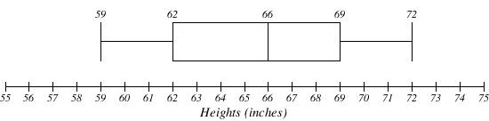
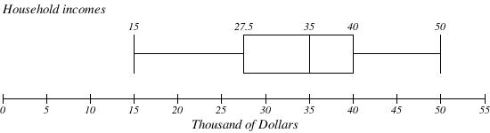
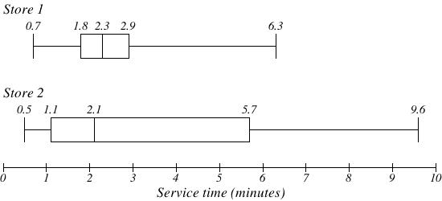
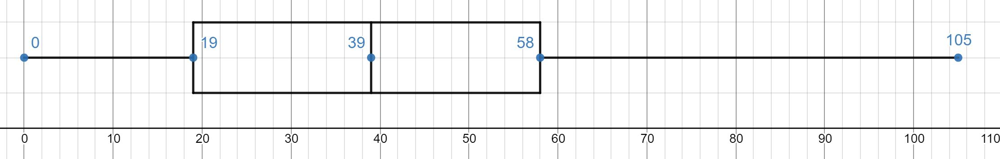

2.4 Measures of Variation
2.4 Measures of Variation
Upon completion of this section, you should be able to
- Calculate the range.
- Calculate the standard deviation and variance for both a population and sample.
- Calculate the five-number summary.
- Create a box-plot.
- Applications of Box Plots.
Calculate the Range
Video (cc) - Introduction to Variation
We saw already in the previous section how to measure the center of a quantitative data set using the mean, median or mode, but what about the spread? We will start off with some exploration and build up a set of tools to allow us to give some numeric summary for a measure of the spread.
Consider these three sets of quiz scores:
Section A: 5 5 5 5 5 5 5 5 5 5
Section B: 0 0 0 0 0 10 10 10 10 10
Section C: 4 4 4 5 5 5 5 6 6 6
All three of these sets of data have a mean of 5 and median of 5 (verify this on your own), yet the scores for each section are clearly quite different. In section A, everyone had the same score; in section B half the class got no points and the other half got a perfect score, assuming this was a 10-point quiz. Section C was not as consistent as section A, but not as widely varied as section B. A numeric summary of the center doesn't tell us this about the data. From the numeric summary of center they all would appear equivalent if we didn't have the data itself in front of us. We need some way to describe how the data varies about that center.
There are several ways to measure this "spread" of the data. The first is the simplest and is called the range.
Range
The range is the difference between the maximum value and the minimum value of the data set.
Example 1
Using the quiz scores from above find the range from each section.
Solution
For section A, the range is 0 since both maximum and minimum are 5 and 5 – 5 = 0
For section B, the range is 10 since 10 – 0 = 10
For section C, the range is 2 since 6 – 4 = 2
In each of the sections from above we saw that the median was 5 and now have a tool to help describe the spread by using the range. Does the range do a good job of describing the spread? Not exactly. In the last example, range seems to be revealing how spread out the data is. However, suppose we add a fourth section, Section D, with scores 0 5 5 5 5 5 5 5 5 10.
This section also has a mean and median of 5. The range is 10, yet this data set is quite different than Section B. The range doesn't take into account how close all the data points are to the center. To better illuminate the differences, we’ll have to turn to more sophisticated measures of variation. We call it the standard deviation - the formula looks complicated, but we will walk through the details and how to calculate it by hand (typically software is used and can be done on most handheld calculators and spreadsheet programs).
Calculate the Standard Deviation and Variance
If x is a number, then the difference "x-mean" is called its deviation. What we want to find is some way to describe the deviations of an entire data set. The procedure to calculate the standard deviation depends on whether the numbers are the entire population or are data from a sample. The calculations are similar, but not identical. Therefore the symbol used to represent the standard deviation depends on whether it is calculated from a population or a sample. The lower case letter s represents the sample standard deviation and the Greek letter σ (sigma, lower case) represents the population standard deviation. If the sample has the same characteristics as the population, then s should be a good estimate of σ. The formula for finding the standard deviation is given below.
Standard deviation
The standard deviation is a measure of variation based on measuring how far each data value deviates, or is different, from the mean. It should only be used if you are using the mean as a measure of the center. We use a lowercase s to represent the standard deviation if the data comes from a sample of size n and the lowercase greek letter sigma, σ, if the data comes from all the population with size N.
To compute standard deviation:
- Find the deviation of each data from the mean. In other words, subtract the mean from the data value.
- Square each deviation.
- Add the squared deviations.
- Divide by n, the number of data values, if the data represents a whole population; divide by n – 1 if the data is from a sample.
- Compute the square root of the result.
A few important characteristics:
- Standard deviation is always positive. Standard deviation will be zero if all the data values are equal, and will get larger as the data spreads out.This value will never be negative (it measures a distance - we can not have a negative distance measurement).
- Standard deviation has the same units as the original data.
- Standard deviation, like the mean, can be highly influenced by outliers.
Using the data from section D, we could compute for each data value the difference between the data value and the mean:
| data value | deviation: data value - mean |
|---|---|
| 0 | 0-5 = -5 |
| 5 | 5-5 = 0 |
| 5 | 5-5 = 0 |
| 5 | 5-5 = 0 |
| 5 | 5-5 = 0 |
| 5 | 5-5 = 0 |
| 5 | 5-5 = 0 |
| 5 | 5-5 = 0 |
| 5 | 5-5 = 0 |
| 10 | 10-5 = 5 |
We would like to get an idea of the "average" deviation from the mean, but if we find the average of the values in the second column the negative and positive values cancel each other out (this will always happen), so to prevent this we square every value in the second column:
| data value | deviation: data value - mean | deviation squared |
|---|---|---|
| 0 | 0-5 = -5 | (-5)2 = 25 |
| 5 | 5-5 = 0 | 02 = 0 |
| 5 | 5-5 = 0 | 02 = 0 |
| 5 | 5-5 = 0 | 02 = 0 |
| 5 | 5-5 = 0 | 02 = 0 |
| 5 | 5-5 = 0 | 02 = 0 |
| 5 | 5-5 = 0 | 02 = 0 |
| 5 | 5-5 = 0 | 02 = 0 |
| 5 | 5-5 = 0 | 02 = 0 |
| 10 | 10-5 = 5 | (5)2 = 25 |
We then add the squared deviations up to get 25 + 0 + 0 + 0 + 0 + 0 + 0 + 0 + 0 + 25 = 50. Ordinarily we would then divide by the number of scores, n, (in this case, 10) to find the mean of the deviations. But we only do this if the data set represents a population; if the data set represents a sample (as it almost always does), we instead divide by n - 1 (in this case, 10 - 1 = 9). The reason for doing so is that it provides a better estimator to the actual standard deviation of a population (a proof of this is beyond the scope of our work).
So in our example, we would have 50/10 = 5 if section D represents a population and 50/9 = about 5.56 if section D represents a sample. These values (5 and 5.56) are called, respectively, the population variance and the sample variance for section D.
Variance can be a useful statistical concept, but note that the units of variance in this instance would be points-squared since we squared all of the deviations. What are points-squared? Good question. We would rather deal with the units we started with (points in this case), so to convert back we take the square root and get:
If we are unsure whether the data set is a sample or a population, we will usually assume it is a sample, and we will round answers to one more decimal place than the original data, as we have done above.
Doing these calculations by hand can be tedious, but you have to be careful that when you use software to compute the standard deviation that it is most likely calculating the standard deviation for a sample.
Example 2
Compute the standard deviation for Section B above. Then compute the standard deviation of the other three sections.
Solution
We first calculate that the mean is 5. Using a table can help keep track of your computations for the standard deviation:
| data value | deviation: data value - mean | deviation squared |
|---|---|---|
| 0 | 0-5 = -5 | (-5)2 = 25 |
| 0 | 0-5 = -5 | (-5)2 = 25 |
| 0 | 0-5 = -5 | (-5)2 = 25 |
| 0 | 0-5 = -5 | (-5)2 = 25 |
| 0 | 0-5 = -5 | (-5)2 = 25 |
| 10 | 10-5 = 5 | (5)2 = 25 |
| 10 | 10-5 = 5 | (5)2 = 25 |
| 10 | 10-5 = 5 | (5)2 = 25 |
| 10 | 10-5 = 5 | (5)2 = 25 |
| 10 | 10-5 = 5 | (5)2 = 25 |
Assuming this data represents a population, we will add the squared deviations, divide by 10, the number of data values, and compute the square root:
Notice that the standard deviation of this data set is much larger than that of section D since the data in this set is more spread out.
For comparison, the standard deviations of all four sections are:
| Section A: 5 5 5 5 5 5 5 5 5 5 | Standard deviation: 0 |
| Section B: 0 0 0 0 0 10 10 10 10 10 | Standard deviation: 5 |
| Section C: 4 4 4 5 5 5 5 6 6 6 | Standard deviation: 0.8 |
| Section D: 0 5 5 5 5 5 5 5 5 10 | Standard deviation: 2.2 |
Notice that in Section B where we have the highest standard deviation that the data is further from the mean. As the data gets more clumped at the mean that value for the standard deviation gets lower, but one or two extreme values can cause it to grow in size (see section D for this as we have most of the data equal to the mean, but those two outliers of 0 and 10 pull up the value of the standard deviation to almost half of Section B where all the data were extreme values away from the mean).
Example 3
Eight male students' weights (in pounds) were recorded:
165, 145, 160, 150, 180, 220, 200, 180
Find the standard deviation of these weights.
Solution
The first thing needed is to find the mean weight.
| data value | deviation: data value - mean | deviation squared |
|---|---|---|
| 165 | 165 - 175 = -10 | (-10)2 = 100 |
| 145 | 145 - 175 = -30 | (-30)2 = 900 |
| 160 | 160 - 175 = -15 | (-15)2 = 225 |
| 150 | 150 - 175 = -25 | (-25)2 = 625 |
| 180 | 180 - 175 = 5 | (5)2 = 25 |
| 220 | 220 - 175 = 45 | (45)2 = 2025 |
| 200 | 200 - 175 = 25 | (25)2 = 625 |
| 180 | 180 - 175 = 5 | (5)2 = 25 |
Assuming this data represents a sample, we will add the squared deviations, divide by 7, the number of data values minus one, and compute the square root:
We found that the standard deviation is 25.5 lbs. The units for the standard deviation is the same as the units for that data.
Notice we also rounded the answer to one more decimal place than the data.
The work we have done to find the standard deviation can be long and labor intensive for large data sets (even for calculating the mean and median). It is best to use software to do these calculations when it is available. Applications like Excel and Google Sheets both have functions built into them to help you with this. When using make sure you know if you are finding the standard deviation for a population or sample though as we have already seen the formulas are slightly different depending on where your data is coming from.
What does the value of the standard deviation represent?
The standard deviation, s or σ, is either zero or larger than zero. When the standard deviation is zero, there is no spread; that is, all the data values are equal to each other. The standard deviation is small when the data are all concentrated close to the mean, and is larger when the data values show more variation from the mean. When the standard deviation is a lot larger than zero, the data values are very spread out about the mean; outliers can make s or σ very large.
For ANY data set, no matter what the distribution of the data is Chebyshev's Rule tells us that:
- At least 75% of the data is within two standard deviations of the mean.
- At least 89% of the data is within three standard deviations of the mean.
- At least 95% of the data is within 4.5 standard deviations of the mean.
The standard deviation, when first presented, can seem unclear. By graphing your data, you can get a better "feel" for the deviations and the standard deviation. You will find that in symmetrical distributions, the standard deviation can be very helpful but in skewed distributions, the standard deviation may not be much help. The reason is that the two sides of a skewed distribution have different spreads. In a skewed distribution, it is better to look at the first quartile, the median, the third quartile, the smallest value, and the largest value (these five values will be called the five-number summary). Display your data in a histogram or a box plot (which will be shown below).
Try it Now 1
The price of a jar of peanut butter at 5 stores were: $3.29, $3.59, $3.79, $3.75, and $3.99. Find the standard deviation of the prices.
Hint 1
Answer
Calculate the five-number summary
Where standard deviation is a measure of variation based on the mean, quartiles are based on the median.
Quartiles
Quartiles are values that divide the data in quarters.
The first quartile (Q1) is the value so that 25% of the data values are below it; the third quartile (Q3) is the value so that 75% of the data values are below it. You may have guessed that the second quartile is the same as the median, since the median is the value so that 50% of the data values are below it.
This divides the data into quarters; 25% of the data is between the minimum and Q1, 25% is between Q1 and the median, 25% is between the median and Q3, and 25% is between Q3 and the maximum value
While quartiles are not a 1-number summary of variation like standard deviation, the quartiles are used with the median, minimum, and maximum values to form a 5 number summary of the data.
Five number summary
The five number summary takes this form:
Minimum, Q1, Median, Q3, Maximum
The five number summary gives a numeric description for the data set. We can go further by quantifying a spread about the median with the interquartile range and define a way to classify data that are outliers. We consider a point an outlier when it is substantially above Q3 or substantially below Q1. In the definition below we quantify what substantial means.
Interquartile Range and Outliers
The interquartile range (IQR) describes the spread of the data bout the median. The value is the difference between Q3 and Q1.
Outliers are data values that are substantially below Q1 or substantially above Q3. We consider them substantial if the data value is more than 1.5*IQR below Q1 or 1.5*IQR above Q3.
To find the first quartile, we need to find the data value so that 25% of the data is below it. If n is the number of data values, we compute a locator by finding 25% of n. If this locator is a decimal value, we round up, and find the data value in that position. If the locator is a whole number, we find the mean of the data value in that position and the next data value. This is identical to the process we used to find the median, except we use 25% of the data values rather than half the data values as the locator.
To find the first quartile, Q1
-
Order the data from least to greatest.
-
Compute the locator: L = 0.25n
-
Determine which case you are to find the quartile:
-
If L is a decimal value: Round up to L+ and use the data value in the L+th position.
-
If L is a whole number: Find the mean of the data values in the Lth and L+1th positions.
-
The goal is to guarantee that we select the smallest data value for which 25% of the data falls below the data point in that L+ position. If we had rounded down we would have less than 25% of the data falling below L+.
To find the third quartile, Q3
Use the same procedure as for Q1, but with locator: L = 0.75n
Instructions on finding quartiles vary, but the general goal is to determine a value that helps measure the spread of the data. Examples should help make this clearer.
Example 4
Suppose we have measured 9 females and their heights (in inches), sorted from smallest to largest are:
59 60 62 64 66 67 69 70 72
Find the 5-number summary.
Solution
To find the first quartile we first compute the locator: 25% of 9 is L = 0.25(9) = 2.25. Since this value is not a whole number, we round up to 3. The first quartile will be the third data value: 62 inches.
To find the third quartile, we again compute the locator: 75% of 9 is 0.75(9) = 6.75. Since this value is not a whole number, we round up to 7. The third quartile will be the seventh data value: 69 inches.
For the 9 female sample, the median is 66, the minimum is 59, and the maximum is 72. The 5 number summary is: 59, 62, 66, 69, 72.
Example 5
Suppose we had measured 8 females and their heights (in inches), sorted from smallest to largest are:
59 60 62 64 66 67 69 70
Find the 5-number summary.
Solution
To find the first quartile we first compute the locator: 25% of 8 is L = 0.25(8) = 2. Since this value is a whole number, we will find the mean of the 2nd and 3rd data values: (60+62)/2 = 61, so the first quartile is 61 inches.
The third quartile is computed similarly, using 75% instead of 25%. L = 0.75(8) = 6. This is a whole number, so we will find the mean of the 6th and 7th data values: (67+69)/2 = 68, so Q3 is 68.
Note that the median could be computed the same way, using 50%.
For the 8 female sample, the median is 65, the minimum is 59, and the maximum is 70, so the 5 number summary would be: 59, 61, 65, 68, 70.
Example 6
Returning to our quiz score data, find the 5-number summary of the quiz scores.
Solution
In each case, the first quartile locator is 0.25(10) = 2.5, so the first quartile will be the 3rd data value, and the third quartile will be the 8th data value. Creating the five-number summaries:
| Section and data | 5-number summary |
|---|---|
| Section A: 5 5 5 5 5 5 5 5 5 5 | 5, 5, 5, 5, 5 |
| Section B: 0 0 0 0 0 10 10 10 10 10 | 0, 0, 5, 10, 10 |
| Section C: 4 4 4 5 5 5 5 6 6 6 | 4, 4, 5, 6, 6 |
| Section D: 0 5 5 5 5 5 5 5 5 10 | 0, 5, 5, 5, 10 |
Of course, with a relatively small data set, finding a five-number summary is a bit silly, since the summary contains almost as many values as the original data set. In the TryItNow below you will have a larger data set.
Try it Now 2
The total cost of textbooks for the term was collected from 36 students. Find the 5 number summary of this data. Would we consider $140 an outlier? What about $460?
| $140 | $160 | $160 | $165 | $180 | $220 | $235 | $240 | $250 | $260 | $280 | $285 |
| $285 | $285 | $290 | $300 | $300 | $305 | $310 | $310 | $315 | $315 | $320 | $320 |
| $330 | $340 | $345 | $350 | $355 | $360 | $360 | $380 | $395 | $420 | $460 | $520 |
Hint 1
Answer
In the next example below we will find the five number summary when the data is given on a frequency table.
Example 7
The one hundred families in a particular neighborhood are asked their annual household income, to the nearest $5 thousand dollars. The results are summarized in a frequency table below. Find the 5-number summary.
| Income (thousands of dollars) | Frequency |
|---|---|
| 15 | 6 |
| 20 | 8 |
| 25 | 11 |
| 30 | 17 |
| 35 | 19 |
| 40 | 20 |
| 45 | 12 |
| 50 | 7 |
Solution
By adding the frequencies, we can see there are 100 data values represented in the table. In the last section we found the median was $35 thousand. We can see in the table that the minimum income is $15 thousand, and the maximum is $50 thousand.
To find Q1, we calculate the locator: L = 0.25(100) = 25. This is a whole number, so Q1 will be the mean of the 25th and 26th data values.
Counting up in the data as we did before,
There are 6 data values of $15, so values 1 to 6 are $15 thousand
The next 8 data values are $20, so values 7 to (6+8)=14 are $20 thousand
The next 11 data values are $25, so values 15 to (14+11)=25 are $25 thousand
The next 17 data values are $30, so values 26 to (25+17)=42 are $30 thousand
The 25th data value is $25 thousand, and the 26th data value is $30 thousand, so Q1 will be the mean of these: (25 + 30)/2 = $27.5 thousand.
To find Q3, we calculate the locator: L = 0.75(100) = 75. This is a whole number, so Q3 will be the mean of the 75th and 76th data values. Continuing our counting from earlier,
The next 19 data values are $35, so values 43 to (42+19) = 61 are $35 thousand
The next 20 data values are $40, so values 61 to (61+20) = 81 are $40 thousand
Both the 75th and 76th data values lie in this group, so Q3 will be $40 thousand.
Putting these values together into a five-number summary, we get: 15, 27.5, 35, 40, 50
Create a Box-Plot
The 5 number summary divides the data into four intervals, each of which will contain about 25% of the data. For visualizing that summary, there is a graphical representation of a 5-number summary called a box plot, or box and whisker graph.
Box plot
A box plot is a graphical representation of a five-number summary.
To create a box plot, a number line is first drawn. A box is drawn from the first quartile to the third quartile, and a line is drawn through the box at the median. “Whiskers” are extended out to the minimum and maximum values.
Example 8
The heights of a set of females had a 5-number summary: 59, 62, 66, 69, 72. Create a box-plot.
Solution

Video Solution Example 9 (cc) - another example starts after the 2:42 mark of the video.
Notice how the boxplot allows us to visualize the differences in the spread of the data on the quartiles instead of just having the range given to us.
Example 9
Create a box plot based on the household income data with 5 number summary:
15, 27.5, 35, 40, 50
Solution

Try it Now 3
Create a boxplot based on the textbook price data from the last Try it Now. The five number summary from that problem was found to be: $140, $255, $307.50, $347.50, $460.
Hint 1
Answer
Applications of Box Plots
Box plots are particularly useful for comparing data from two populations.
Example 10
The box plot of service times for two fast-food restaurants is shown below. Describe what is seen in the plots.

Solution
While store 2 had a slightly shorter median service time (2.1 minutes vs. 2.3 minutes), store 2 is less consistent, with wider spread of the data.
At store 1, 75% of customers were served within 2.9 minutes, while at store 2, 75% of customers were served within 5.7 minutes.
Which store should you go to in a hurry? That depends upon your opinions about luck – 25% of customers at store 2 had to wait between 5.7 and 9.6 minutes.
Video Solution Example 11 (cc) - another example starts after the 2:26 mark of the video.
Example 11
The boxplot below is based on the birth weights of infants with severe idiopathic respiratory distress syndrome (SIRDS). The boxplot is separated to show the birth weights of infants who survived and those that did not. Compare these two boxplots and describe the differences that can be observed.

Solution
Comparing the two groups, the boxplot reveals that the birth weights of the infants that died appear to be, overall, smaller than the weights of infants that survived. In fact, we can see that the median birth weight of infants that survived is the same as the third quartile of the infants that died.
Similarly, we can see that the first quartile of the survivors is larger than the median weight of those that died, meaning that over 75% of the survivors had a birth weight larger than the median birth weight of those that died.
Looking at the maximum value for those that died and the third quartile of the survivors, we can see that over 25% of the survivors had birth weights higher than the heaviest infant that died.
The box plot gives us a quick, albeit informal, way to determine that birth weight is quite likely linked to survival of infants with SIRDS.
Below is an example from Khanacademy. Make sure you pause the video and work the problem yourself. When you compare the solutions you will see he uses a different method for finding the quartiles - this method will give you the same results as you would get with the method shown above. Just keep in mind that we are using the locator method (.25n) and (.75n) with rounding up for decimals to find Q1 and Q3.
Exercises:
-
Determine the range for the set of scores: 10, 8, 5, 4, 6, 3, 5, 6, 7.
Answer
-
The temperature highs (in Fahrenheit) for the first ten days in May 2021 for the temperature in Tucson are given below. Round all answers to two decimal places.
95° 92° 86° 91° 96° 100° 96° 92° 93° 94° 94° 97° - Find the mean, median, and mode for the data set.
- Find the range, variance, and standard deviation for the data set. Treat the data as if it were a sample.
- Find the five-number summary for the data set.
- Draw a box plot for the data set.
Answer
- Mean 93.83, Median 94, Mode 92, 94, 96
- Range 14, Standard Deviation 3.51, Variance 12.33
- 86, 92, 94, 96, 100

-
A sample of 30 distance scores measured in yards has a mean of 7, a variance of 16, and a standard deviation of 4.
-
You want to convert all your distances from yards to feet, so you multiply each score in the sample by 3. What are the new mean, median, variance, and standard deviation?
-
You then decide that you only want to look at the distance past a certain point. Thus, after multiplying the original scores by 3, you decide to subtract 4 feet from each of the scores. Now what are the new mean, median, variance, and standard deviation?
Answer
-
-
Make up three data sets with 5 numbers each that have the same mean but different standard deviations.
-
Would the variance of 10, 12, 17, 20, 25, 27, 42, and 45 be larger if the numbers represented a population or a sample?
Answer
-
You recorded the time in seconds it took for 8 participants to solve a puzzle. The times were: 15.2, 18.8, 19.3, 19.7, 20.2, 21.8, 22.1, 29.4. Find the variance and standard deviation for the times (assume the data comes from a sample of all puzzle solvers).
Answer
-
You recorded the time in seconds it took for 8 participants to solve a puzzle. These times appear below. However, when the data was entered into the statistical program, the score that was supposed to be 22.1 was entered as 21.2. Scores: 15.2, 18.8, 19.3, 19.7, 20.2, 21.8, 22.1, 29.4
-
Which of these measures of central tendency will change when you correct the recording error (mean, median, and/or mode)?
-
Which measures of variability (range, standard deviation, variance) will change when you correct the recording error?
Answer
-
-
A random sample of students were selected from a local college and their age was recorded. The ages for the 25 students were: 17, 18, 18, 18, 18, 19, 19, 19, 19, 19, 20, 20, 20, 21, 21, 22, 22, 23, 25, 26, 29, 30, 32, 38, 51. Create a boxplot of the ages.
Answer
The five number summary: 17, 19, 20, 25, 51

-
The box plot below shows salaries for Actuaries and CPAs. Kendra makes the median salary for an Actuary. Kelsey makes the first quartile salary for a CPA. Who makes more money? How much more?

Answer
-
Studies are often done by pharmaceutical companies to determine the effectiveness of a treatment program. Suppose that a new AIDS antibody drug is currently under study. It is given to patients once the AIDS symptoms have revealed themselves. Of interest is the average length of time in months patients live once starting the treatment. Two researchers each follow a different set of 40 AIDS patients from the start of treatment until their deaths. The following data (in months) are collected.
Researcher One: 3; 4; 11; 15; 16; 17; 22; 44; 37; 16; 14; 24; 25; 15; 26; 27; 33; 29; 35; 44; 13; 21; 22; 10; 12; 8; 40; 32; 26; 27; 31; 34; 29; 17; 8; 24; 18; 47; 33; 34
Researcher Two: 3; 14; 11; 5; 16; 17; 28; 41; 31; 18; 14; 14; 26; 25; 21; 22; 31; 2; 35; 44; 23; 21; 21; 16; 12; 18; 41; 22; 16; 25; 33; 34; 29; 13; 18; 24; 23; 42; 33; 29
Create a comparative set of boxplots of the data for the researchers.
Answer
The five number summary Researcher One: 1, 15, 24, 31.5, 47
The five number summary Researcher Two: 2, 16, 22, 30, 44

-
The following box plot shows the estimated percent of U.S. population below a given age for 2019 (from census.gov).

-
Can we say children (17 and under) make up 25% of the population?
-
What percent of the population is between 19 and 58?
-
If the total population is estimated to be 328,239,523, then approximately how many people are between the ages 19 and 39?
-
11.5% are age 65 and over. Approximately what percentage of the population are working adults (age 18 to age 65)?
Answer
-